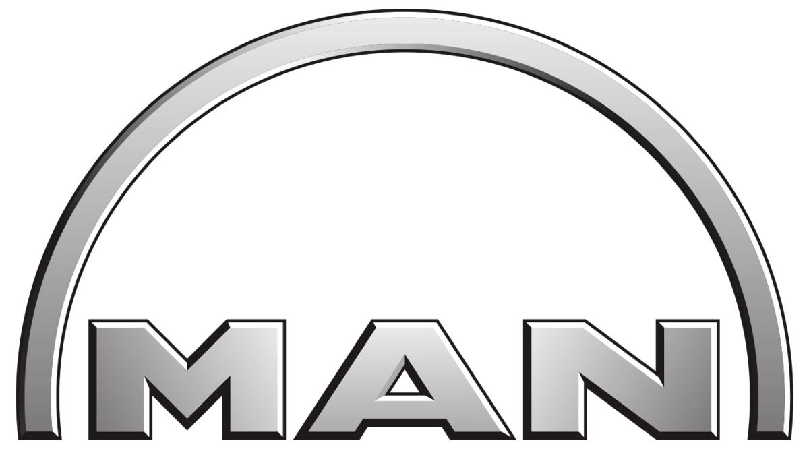
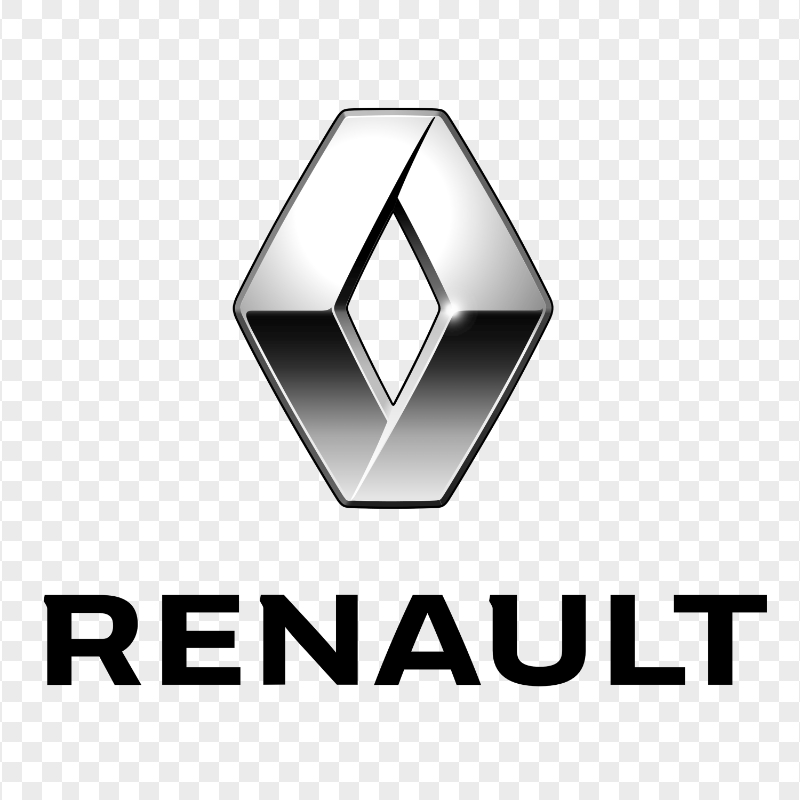
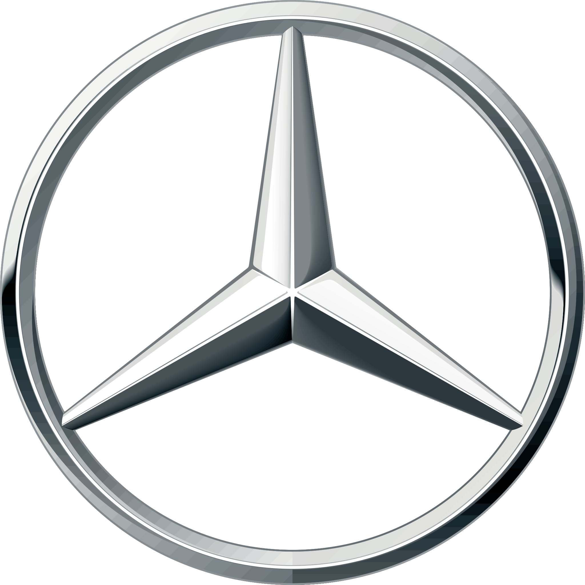
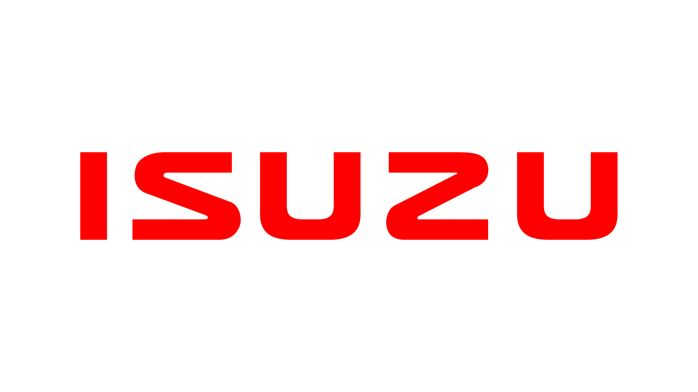
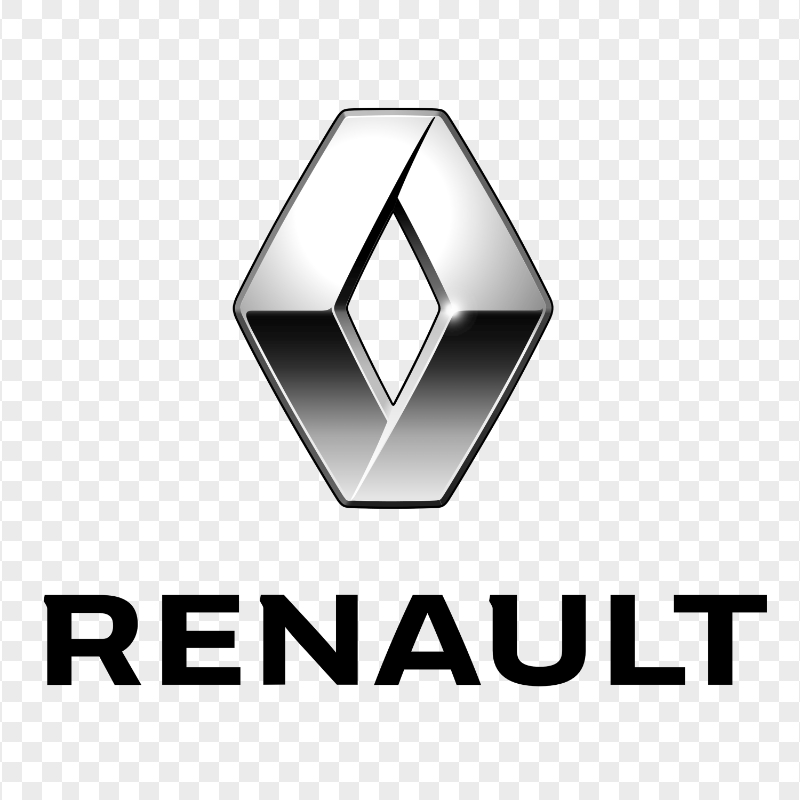
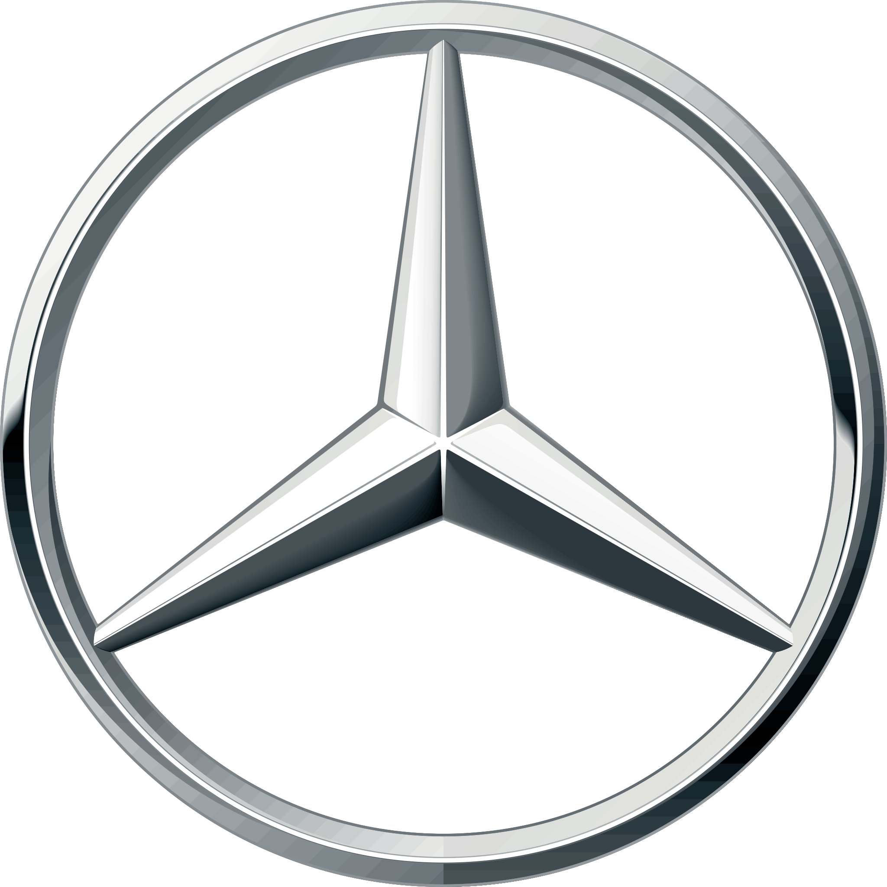
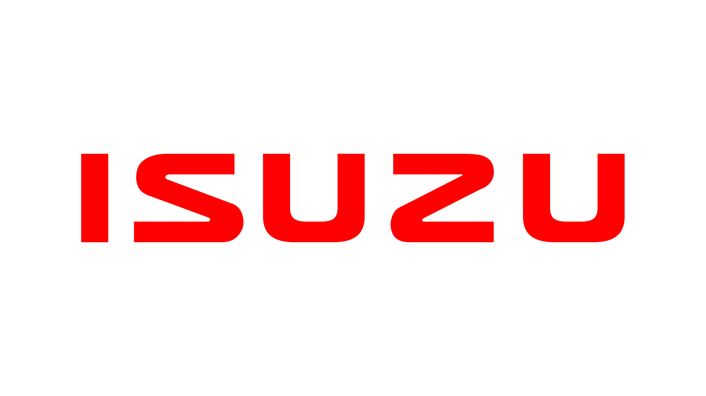

Виконуємо ремонт форсунок CR для всіх марок автомобілів

 





DTForce виконує професійний ремонт форсунок Common Rail (CR) від виробників BOSCH, DELPHI, DENSO, Siemens. Використовуємо нові оригінальні розпилювачі, шайби та плунжерні пари, з повною перевіркою на стенді.
Зняття/установка:
від 500 грн
Перевірка на стенді:
450 грн
Ремонт:
від 4500 грн
0445110186, 0445110260, 0445110335
DLLA145P1695, DLLA157P852
Зняття/установка:
від 600 грн
Перевірка на стенді:
550 грн
Ремонт:
від 5000 грн
0445115024, 0445115076
П'єзоелектричні форсунки з високою точністю впорскування
Зняття/установка:
від 500 грн
Перевірка на стенді:
450 грн
Ремонт:
від 4500 грн
EJDR00501Z, EJDR01001Z
DLLA145P1545, DLLA152P1512
Зняття/установка:
від 550 грн
Перевірка на стенді:
500 грн
Ремонт:
від 4800 грн
095000-5600, 095000-6593
DLLA152P989, DLLA145P870
Common Rail (CR) - це сучасна система впорскування дизельного палива, де форсунки підключені до загальної магістралі під високим тиском (до 2500 бар). Це дозволяє точно дозувати паливо та здійснювати багатофазне впорскування, покращуючи ефективність згорання та знижуючи викиди шкідливих речовин.
Виникає через неправильне впорскування палива. Причиною найчастіше є забруднений або зношений розпилювач, що призводить до неповного згоряння та підвищеної витрати палива. Рішення - ремонт або заміна розпилювача.
Проявляється як погане прискорення та провали в роботі. Причини: зношення клапана керування або мультиплікатора форсунки. Призводить до неправильної кількості впорскування палива. Потребує діагностики на спеціалізованому стенді.
Проявляється як лоскотання форсунок, підвищена витрата палива та нерівна робота двигуна. Спричиняється зносом голки розпилювача або його забрудненням. Потребує чистки або заміни розпилювача та регулювання форсунки.
Особливо помітно в холодну пору року. Причини: несправність електричної частини форсунки, обрив котушки, несправність п'єзоелемента (для PIEZO форсунок). Потребує діагностики електричних параметрів і, можливо, ремонту електронної частини.
Діагностика та ремонт форсунок на професійному стенді Bosch EPS 708 з видачею протоколу випробувань.
Гарантія до 12 місяців на всі види робіт. Використовуємо тільки оригінальні комплектуючі від перевірених постачальників.
Понад 10 років досвіду у сфері ремонту дизельного обладнання. Постійне навчання та підвищення кваліфікації.
Перевірка форсунки на професійному стенді для визначення характеристик розпилення та герметичності. Візуальний огляд для виявлення пошкоджень.
Професійне розбирання форсунки зі спеціалізованим інструментом та фіксація всіх параметрів для подальшого налаштування.
Ретельна очистка всіх компонентів у спеціальній ультразвуковій ванні для видалення нагару та відкладень.
Заміна зношених компонентів на нові: розпилювача, клапанів, ущільнень та інших деталей за необхідності.
Точна збірка форсунки з дотриманням усіх технологічних вимог та налаштування робочих параметрів.
Фінальна перевірка параметрів форсунки на професійному стенді з видачею протоколу випробувань.
Зателефонуйте нам або залиште заявку, і ми зв'яжемося з вами